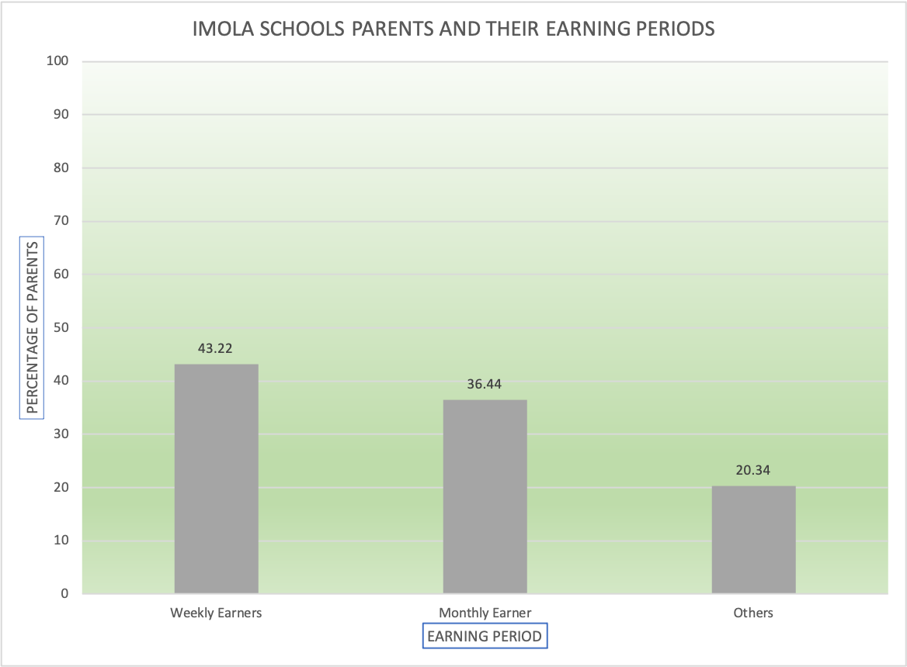

My name is Olamide
I am a data analyst


In my current role at Imola Schools, I developed a form to gather data from
parents. Analyzing this data revealed that most parents were either traders
or civil servants, resulting in irregular income streams. Using these
insights, I created a tailored payment plan: traders could pay weekly,
while civil servants could pay monthly. This application of data analytics
significantly enhanced the school's cash flow management.

One of the projects I worked on during my internship involved analyzing the
types of fuel engine cars used between 1982 and 2016. I began by cleaning
the raw data, removing errors, and filling in any missing information.
Once the data was cleaned, I moved on to preprocessing, organizing the data
for analysis. Finally, I selected a suitable chart to visually represent the
results, which can be seen below. A detailed report was then written to
summarize the findings and provide insights based on the data analysis.

Please notify me now to get started on that project of getting a fancy website for your business.